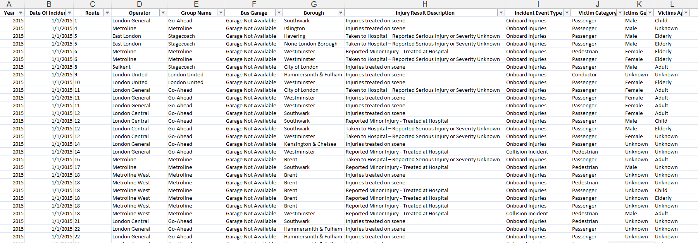
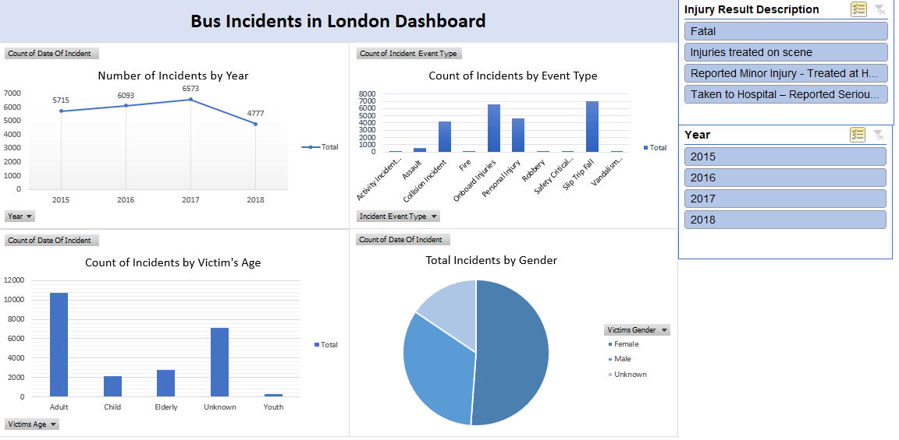
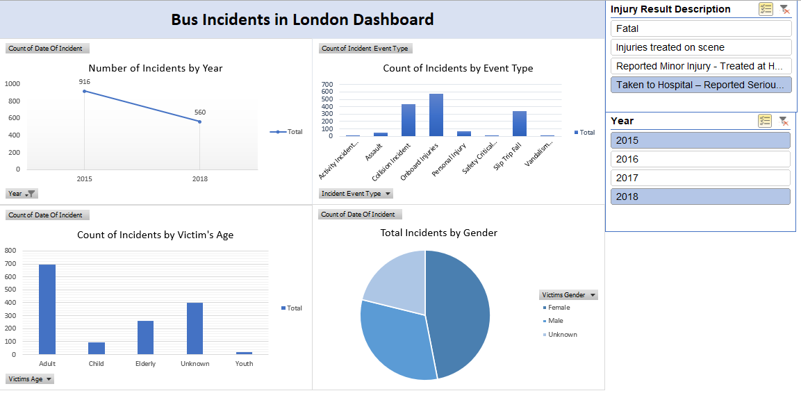

A comprehensive examination was conducted on an online dataset detailing bus incidents in London, spanning the years 2015 to 2018. The dataset encompassed key columns such as route, operator, injury result description, incident event type, victim category, victim gender, victim age, and more.

The dataset underwent thorough visualization across diverse categories, employing filters for year and injury result description. The analysis employed various view types, including:

Number of Incidents by Year : Utilizing a line chart, the total number of incidents per year was visually represented. Notably, the year 2017 recorded the highest number of bus incidents.
Incidents by Event Type : Multiple event or incident types, such as activity incident, assault, collision, onboard injuries, etc., were explored. The total count of each incident type across a single year or multiple years was illustrated through a bar chart.
Incidents by Victim’s Age : A bar chart displayed the incident count categorized by victim age, with divisions for adults, children, the elderly, youth, and unknown. The analysis revealed that adults experienced the highest number of injuries when considering all the years.
Incidents by Gender : The total number of incidents based on gender was depicted in a pie chart. Notably, the data highlighted that females were the most frequently attacked gender in any given year.
The entire dashboard offers the flexibility to be filtered by both year and injury result description, with the filtering options conveniently located on the left side of the dashboard.
